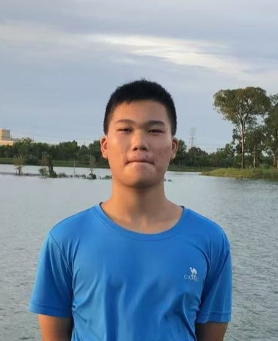

Hello everyone, my name is Ziyue Zhou. I am a senior majoring in Computer Science at the University of Houston-Downtown. I chose computer science because I have always been interested in computer technology and software development. During my studies, I also acquired a wealth of interesting and important knowledge, including C++, Python, the Internet of Things (IoT), databases, and more. When I'm not studying, I also enjoy exploring new tech products or playing tennis with friends when the weather is nice.
Click it to visit.
Computer Science & Engineering Technology

| My Favorite | Answer |
|---|---|
| Favorite programming language | C++ |
| Favorite sport | Tennis |
| Favorite food | Hot pot |
| Favorite pet | Cat |
| Favorite Movie | "12 Angry Men" |
Hello everyone, my name is Ziyue Zhou. I am currently a senior majoring in Computer Science at the University of Houston-Downtown. I chose computer science because I have always been fascinated by technology, programming, and the way software can solve real-world problems.
Throughout my studies, I have gained experience in several areas, including C++, Python, databases, networking, IoT systems, and robotics. I enjoy learning how different technologies work together and how they can be applied to build useful applications.
Beyond my academic pursuits, I enjoy exploring various types of computer hardware and other tech products; I also interest in game engines. I also like playing sports such as basketball, tennis, and table tennis. I often play tennis and basketball with friends.
In my daily life, I particularly enjoy making things myself whether it’s modifying equipment, experimenting with new tools, or conducting small-scale projects. At home, I look into the latest tech news, or play computer games while reflecting on the different game engines and software designs that each game requires.